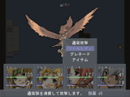
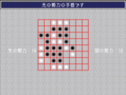
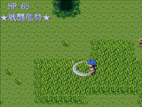

シルバーセカンド開発日誌
2008年07月
■
2008-07-30 (水) シル学パラメータ案▼
最近作業がいい感じに進んでてウッホウホです。
お絵かきとプログラムを変わり変わりにやってるので、
脳が左右両方鍛えられて機嫌がいいのかもしれませんね。
新しい顔グラフィックができるとやっぱり嬉しいものです。
で、開発中のシルフェイド学院物語なんですが、
今のところ、主要パラメータは幻想譚と同じ
「筋力、敏捷、生命、知力、意志」に加えて「魅力」を追加した
計6パラメータにする予定なのですが、果たしてこれでいいかな？
と再考を重ねている状態です。
色々なゲームシステムを搭載する都合上、基本パラメータは
割と大雑把なパラメータであるほうが嬉しいのですが、
「とりあえずこれだけ上げておけばOK」みたいな嫌な意味のシンプルさは
付けたくないので、その辺りどうすればいいのかなあ、
とじっくり煮詰めています。
今のところは、基本パラメータ6つと、
さまざまな効果を発揮する「スキル」の両方で、
物事に対する最終的な能力を算出する仕組みにする予定です。
たとえば「武術運動部」に入ると
「武/運」のスキルレベルを上げられるようになり、
「強打」だとか「消費スタミナ減少」だとか「多段撃」というスキルを
ポイント費やして習得できるよーんという具合です。
一方、基本パラメータは筋力は攻撃力、敏捷は行動速度、
生命はLIFEに影響します。
ただ、戦闘に関わらないところでは覚えた
「スキル」は役に立たないので、
１．効果は薄いけど他のことにも有効な基本パラメータを上げるか、
２．即効性のあるスキルを身につけるか、
の部分が考え所になるようなゲームにしたいなあと考えています。
まあ、ぶっちゃけ幻想譚を育成シミュに
そのまま移したような感じですね。
違うのは、やることが戦闘だけでなく、交流もあったり
アイテム生成があったり、シミュレーション要素が
あったりするかもしれない点くらいです。
ただし1プレイで一気に全部が出てくるわけではないので、
やりたいものだけどうぞ！
というつまみ食いシステムです、ご期待ください。
以下はフリー音楽素材探し記とウディタ講座のお話。
久々にフリーの音楽素材集めしてたら
規約がウディタで使えないところが意外と多くてンギャアアア！
ウディタテスターのすうさんもかつておっしゃってましたが、
確かに面倒臭い！ というか規約がキツい！
別に規約といっても「ちゃんと使用報告してね」くらいだったら、
使わせていただいた場合はよろこんで報告しに行くんですよ！
私も、シルフェイド幻想譚を作ったときは素材を頂いた
皆さまのところに報告しに行きました！
さすがに登録制とか会員制（ログインを要するもの）は
ちょっと面倒かもですけれどね。
でもMP3ファイルで配布されてて「一切いじらないで使ってね」だとか、
「ファイル形式の変換禁止」と書いてあるのは、
ウディタでは自動的に即全滅（※MP3使用不能）なのでそれが絶望的！
もうちょっと規約軽くしてくださぁぁーい！
MP3形式はライセンスの問題で、訴えられる可能性が
ゼロに等しくても使うの恐いんだー！
とまあちょっと文句言ってみましたが、それを見てきたおかげか
「できれば説明書あたりにサイト名書いてくれたら嬉しいな、
あとはご自由にどうぞ」
って書いてある音楽素材サイト見ると
興奮してサイト名とアドレスメモって
全部ファイル落とすくらいあまのじゃく全開です！ 愛してる！
と色々言いましたが、素材を作ってくださっている
皆さまには本当に頭が上がりません。いつもありがとうございます！
これからもいっぱい出てきてくれると嬉しいなあ、素材屋さん。
あ、ウディタといえばすうさんの
ウディタ講座（作りかけ）を見せていただいたんですが
これはクオリティ高いですよ！かなり分かりやすい印象！
ツール開いたけど、具体的に何すればいいのか
分からないよ～という人には、
とても良い手引きになると思いますよ、ご期待下さい。
ちなみに、現状では完全にゼロから作ることを
想定した講座となっているようです。そんなこんなで割と多くの方が夏休みシーズンに入ったと思いますが、
こちらはいつもマイペースに進行中です。最近進んだ内容は、
【新シルフェイド見聞録】
・移動システムをウディタに作り直しすべくお試し作業中。
ツクールのときよりも処理の書き方がスッキリして感動！
・顔グラも何人分かリメイク。でももう少し形を整えたいので地味調整中。
【シルフェイド学院物語】
・シル学用バトルシステム作成、
ターンが回ってきてコマンド選択するところが完成。
・顔グラ生成セット用パーツを少しだけ作成。
といった感じで、ぼちぼち進行しております。
一年がかりの開発に慣れると、どっしり腰を据えて作業できるので
そういう意味の経験って貴重だなあ、とつくづく思いますね。
特にシル見に関しては、ツクールでヒイヒイ言ってた部分が
今回はラクラク作れる（または一度作ればデータの追加などが楽！）ので、
楽しくて仕方がありません、ここでウディタ作った意味がなかったら
どうしようかと思いました。
まあ、RPG機能は現状意味ないままですけれど。
そんなわけで、今回作った画像、
シル学用顔グラ生成モンタージュの一例です。
今後もちょこちょこ調整を進めていく予定です。

下から、体、服、口、目、まゆ、髪の順で重ねて作っています。
こういう顔グラ生成は、パーツが一個できれば、
すぐ他と組み合わせて色々な妄想ができるので、
作成中のモチベーションが高まって面白いですね、これはたまらん！
ちなみに、服装は裸の画像に載せて表示するタイプなので、
シル学におけるモンタージュ生成キャラに関しては、
全裸イベントが作り放題！！
私が手で描くキャラに関しても、とりあえず一番下は裸の予定です。
自由度が高いっていいですよね、たぶん。
シルノ二次創作で出た、いわゆる「サユキの全裸画像はないんですか！？」
というのに近いご要望は、すでにこのフォーマットで
お応えしてしまっている状態です！
これでいて、画面に出るのは肩から上だけなのでCERO的にも全然平気！
……平気ですよね？
ついでに作者さまがあまりにもシビアなアダルト描写さえしなきゃ
15歳以上推奨にもならないぜぇーハッハァ！
ということばっかり気にしてゲーム作ってます。
私は今日も元気です。 ■
2008-07-18 (金) ウディタ作品レビュー▼そういえばそろそろ1300万ヒットです、
いつも来てくださる方、本当にありがとうございます！
親の手術が無事終わったので、今のところ一安心しています。
でもお見舞いだとか細かな用事だとか何だとかで色々あるので、
現在の開発はときどき進めている感じになっています。
ということでネタはないので、今回はウディタ振興企画レビュー！
ウディタそのものはあんまり流行っても困るのですが
作られたものはせっかくなので色んな人に知って欲しい！
そんなわけで、今後たまーに、「おっ」と思ったウディタ作品を
ここで紹介させていただこうと思います！
ただ全部を全部プレイできているたわけではないので、
「こんなに凄いモノ作ったのに何で載ってないんだ！」
と思われた方にはごめんなさい！ あくまで私の手の届いた範囲で！
私はもっぱらウディタ公式の
「今こんなもの作ってますスレ」をチェックしてます。
紹介するのは、一応完成している作品のみです。
将来10作品もでればいいかなと思いましたが、
意外と出てきたので嬉しい！
ゲーム名に[新]とあるのは新ウィンドウを開くリンクで、
[アプ]とあるものはウディタアップローダへの同ウィンドウリンクです、
リンク先にある小さい「ダウンロード」をクリックすると
ダウンロードできます。
作者名のリンクは、全て新ウィンドウでその人のサイトが表示されます。
ダンジョンシーカー[新] 作者：すう さん

いきなり身内ですが、マップやキャラ画像が
フルオリジナルグラフィックという時点で
ぜひとも紹介しなければならないと感じます！
基本システムを流用した作品で、第二のサンプルゲーム的な
位置づけの作品です（と本人が言ってました）。
内容は、8人のキャラの中から最大4人を選んで自由にパーティを組み、
ただひたすらダンジョンの最深部を目指して
ときどき相談したり全滅したりしながら進む
バトル＆ダンジョンゲームです。
システム自体は私が作ったものなので、
戦闘の快適性はそれなりのつもりです。
ボタン押しっぱなしで全員攻撃コマンドを
ピピっと選べるので、戦闘が多くても安心！
すうさんのキャラクターと、
かわいい敵キャラ画像（これはよその素材らしい）と
必要十分なキャラ性のおかげで、
飽きっぽい私でもクリアまで3時間しっかり遊べました！
Light＆Black[削除されました] 作者：U-1 さん

これはウディタの可能性を感じられる一作です。
世界観としては、白と黒の勢力が云々（略）。
つまるところ要はリバーシ（オセロ）ゲーム！
それ以上に説明が必要でしょうか！
私もＣでオセロプログラムを組んだことがありますが、
それをわざわざウディタでやってしまったところが凄い。
コンピュータ対戦もしっかり実装されていて、
完成度は非常に高いと思います。
タイトル画面で、ちゃんとマウス操作であることを
分からせるような工夫がされていたり、
オープニング・エンディングをスキップできるといった小さな配慮など、
こういった部分にゲームを作り慣れている感を感じます。
こういう小さな部分は、一見とても何気ないことなんですが、
優れたおもてなしの精神がないとサッとできない、
意外と難しいことです。
いつも快適さを追求する自分としては「やるなあ」と言いたくなります。
1プレイはリバーシの1対戦分なので、サクッと終わりますよ。
ある旅人の手記[削除されました] 作者：えーき さん

これもウディタの可能性を感じられる一作、
見下ろし型アクションゲームです。
とにかく敵を切る！主人公の操作に関わる
特殊なスキルを装備して使いこなす！
シンプルといえばシンプルかもしれませんが、
ツボをしっかりおさえていて好印象でした！
こういったゲームを作ろうと思っている方には、
一つの見本となると思います。
素材はFirstSeedMaterial様(インターネットアーカイブ)さんの
ものなので、見栄えもとてもいい感じです！
街の人を抹殺しちゃったり超強いモンスターと戦ったりと色々できます。
これで、次は8方向キャラグラを駆使してダッシュやら
ジャンプやらがしっかりできるアクションゲームが出てきたら、
いよいよウディタの本領発揮ィィィ！という感じだと思っています。
ウディタは半マス移動が可能なので、初期イースシリーズの
マネくらいだったらできるかもしれませんね。
ファンタジアクロス[削除されました] 作者：茶 さん
いかにもファンタジーっぽい短編アドベンチャーRPGです。
主人公である妖精さんが、花畑を荒らす何者かを
捕まえるために奮闘する物語、
ウディタで素状態から作るなら、まずこんなのになるかなあ、
と思える非常に素直な作品。素材に
FirstSeedMaterialのものを使っていたり、
立ち絵がオリジナルなのがポイント高いですね！見栄えがいい！
今後は本編であるＦａｎｔａｓｉａ Xの開発を予定されているそうで、
さらにエンジンかかってきたらどう面白くなるんだろう！
と少し期待しています。
ジャムジャムマーマレード[削除されました] 作者：アレン さん

同じく短編アドベンチャーRPGなんですが、
ファンタジアクロスとはあまりに正反対、
そのセンスに色んな意味でコーヒー吹いた作品です。
色んな意味で芸術的というか前衛的というか、
ギャグにミュージカルに色彩と
作者さんの個性が大爆発しています。
こちらも顔グラフィックはオリジナル！
「上で紹介されたゲームはよりもっと濃いのが欲しい！」
と思った方にはよく合いそうです。
紹介は以上です！
完成作には、サンプルアレンジなりFSM素材を採用されたりして
グラフィックに凝った作品が意外と多かったので、
グラフィックから入るのも完成へのモチベーションに
繋がるかもしれませんね！
以下はシル学に頂いたコメント返信です！ ▼追記を開く▼
以下は一つ前の記事、シル学の「クラス」についていただいたご意見です。
＞考古学クラスに入る気マンマンです先生ぇ！！
もう入学願書（というかクラス願書？）書いて待ってる人が！！
楽しい3年間を演出すべく頑張ります！
＞小・中・高・大一貫の学院、つ…つまり、
＞小○生に手を出すことが可能と！？ イヤッフー！
＞僕はショタなので、男主人公でセシルくんと好き好きしたいです。
どうしてこうなるまで放っておかれたんですか！ しかもお二人も！！
コストに見合えばセシル君の顔グラも入れておく予定なので
頑張ってシナリオ作ってください。
＞唐突ですが、コミケでスモウル作品本作ってもいいですか？
ぜひ！！作ったらデータだけでも送ってください！！という気分です。
本編はCERO的な意味で割と健全な方向に走りたいので、
皆さんの二次創作はもっと色んな意味で
ハジけて欲しいなあと思うこともあります。
ただひたすらエロスを極めただけの物でも、
エシュターとアルバートが（自主規制）な展開になってるブツでも
覚悟はできていますよ！！！ むしろ大歓迎！！
シル二次にはもっとヨゴレが欲しい、うん。■
2008-07-12 (土) シル学続報 クラスについて▼
3秒後に笑ってしまったウルフです。
でも笑うところじゃない気がします。
親がついに入院したので、そのゴタゴタも含めて
更新ペースが安定しないのですが、
それでも変わらず来てくださる皆さんにはとても感謝しています。
少しペースが崩れるかもしれませんが、
今後とも暖かく見守ってくださると幸いです。
っていうか更新頻度落としてとっとと
ゲーム開発進めた方がいいんでしょうか。迷う。
モノリスフィアのラスボっさん。
まだ塗りかけというか何かが変な気がしてきた。
お絵かきする時間があったらゲームを作ってしまうので
普通のイラスト描いても全然進みません。気晴らしに塗ってます。
で、今回もシルフェイド学院物語の情報！
まだまだ予定の段階ですが、シル学ではゲームの最初のほうで
「所属クラス」を選ぶことになります。
この「クラス」に応じて、
そのプレイにおけるゲームの最終目標が変わってきます。
今のところ、以下の5つを目標にしておりまして、それぞれの目標を
・武術・運動クラス
ただひたすら強くなるのが目標、剣闘大会など
・工学・研究クラス
開発を極めたり何か（賢者の石？）を作るのが目標
・公安クラス
学院で次々に起きる事件を狐狩さんと共に解決する
・運営クラス
派閥として争っているグループの統一を目指す
・考古学クラス
バルト先生と遺跡探索をして古代の謎を解き明かす
みたいな感じにしようかなあと考えています。名前はまだ仮です。
で、各々のクラスにシルキャラが散ってるわけですね。
入ったクラスに応じて、所属キャラクター達との楽しくも切ない
愛と友情と汗まみれの日々を体験できる？のです！
ただし、一回クラスに配属されたら後から変更はききません。
で、プレイヤーさんはその気になれば
新しくクラスを作成することもできるので、
とても人には見せられないようなシナリオを作って裏で配布したり
ルート一本まるまる作ったりして楽しんだりもできます。
よさげなシナリオは、公式認定シナリオとして
ゲーム内からダウンロード可能！
みたいな感じにしていきたいと思っています。
ということで、妄想膨らませまくりのご意見も現在大募集中！！
今のところはシステム開発中で、シナリオには手を付けてませんから、
あのキャラとあのキャラがこのクラスで絡んでたりするのかなあ、とか
同じクラスに入ったらケンカしてそう、とか、
面白そうな妄想でしたらこっそり採用させていただきます！
もちろん自分で作ってみせるぜベイベって人（いるのか！？）は、
ネタを心の内にしまいつつ、バッチリ暖めておいてください！
なおオマケ情報として、ゲームのプレイ期間は3年。
それで、ゲーム開始時はウリユやエシュターが後輩（中等部3年）、
ナダは先輩（高等部2年）、その他はだいたい同学年（高等部1年）、
という感じの設定が今のところ決まっています。セシル君は小学生。
シルフェイド学院は小・中・高・大一貫の学院なので、
同じ学院で出会う可能性はもちろんありますよ。■
2008-07-05 (土) シル見＆シル学進行中▼シル学やらシル見のシステムの再作成やら
色々開発中なんですが、その間はネタがないのが難点です。
とりあえず作りかけも画像でもポツポツ。
シル見に登場、謎のお姉さん（一部の人にはバレバレ）。
まだちょっと調整中。
シル見はプロット煮詰め直し中です。
もっとメリ・ハリ！ 付けた内容にしたいなあ。
一方、シルフェイド学院物語ですが、こちらもシステム作成中です。
今は、キャラデータや育成コマンド、イベントなどの各種情報を
テキストデータで作成できるような仕組みを構築している段階でして、
これが完成すればユーザーさんが
勝手にキャラ追加したりイベント入れたり
あまつさえゼロから世界ごと作ったりできるようになります。
顔グラメイク機能で、自作のキャラと
絡ませたりするイベントだって自由自在！
という妄想だけ先走ってる感じです。
攻略可能キャラはまだボンヤリとしか決まってません。
世界観的には、シルエットノートの7年後くらいを予定しています、
ちょっとパラレルってて、遺伝子技術の革命が70年前に起きたおかげで
半人な人たちがいっぱいいるぜえええ、
という設定だけ追加されてますけど。
あ、あと色んな都合により、セトがなぜか17歳です。
バルトさんが狼人間です。
そしてシシト25歳、無職、とかそういった感じで。
ひょっとしたらシシト君は警察官かもしれませんけれど。
狐狩さんの部下でもいいなあ、広がる妄想。
で、それはともかく、今度はモノリスフィアが4gamerに紹介されました。
こんなコアなゲーム紹介サイト（だと自分は思っている）に
掲載されるとは思ってもみなかったので、
ちょっと驚きです。ありがとうございます！
4gamer 「インディーズゲームの小部屋 モノリスフィア」
http://www.4gamer.net/games/040/G004096/20080704012/
(インターネットアーカイブ)
そのままブラウザ上で再生できる動画も掲載されています。 2008年07月
Copyright © SmokingWOLF / Silver Second
 カテゴリ: シル学
カテゴリ: シル学 カテゴリ: シル学
カテゴリ: シル学